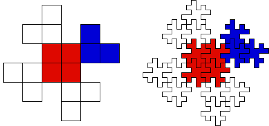

| First Method |
| Begin with a square and replace each side with a broken line made of
8 segments, each of length 1/4. Scale the tile and place four copies
around the original. Continue a few times. Some care is needed in the placement of the
copies, but with practice this method becomes relatively easy. |
|
| Second Method |
| We use the
shape divided into subsquares as a blueprint and follow its pattern replacing each
subsquare with a suitably reduced original shape. |
| Coloring the reduced shape
helps visualize the process. |
| We will start by noticing there are four subsquares
(red) in the center. |
| Replace these by four reduced original shapes which are then grouped
to form one object. |
| Next we see the parts extending out from the center are identical except they are
rotated from one to the other. |
| Each extension contains three subsquares. The
upper right are colored blue.
The four extensions are then
fit into the central shape and all five pieces are grouped to form one object. |
| Continue the process, generating a tile with a fractal boundary. |
|  |